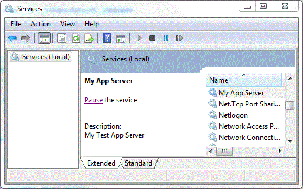

|
Home | Libraries | People | FAQ | More |


This tutorial will demonstrate how to use the "Boost.Application" to build the two types of application supported in the current version, thus it is divided into 2 parts, as follows.
![[Note]](../../../../../doc/src/images/note.png) |
Note |
|---|---|
The code presented here can be compiled on UNIX variants and Windows without modifications. |
![[Tip]](../../../../../doc/src/images/tip.png) |
Tip |
|---|---|
An more complex tutorial can be found at Code Project |
Like name aready explan, this is a most usual type of aplication. Exemples of this kind of application are a command application (e.g. more, tail, ls), mail client application and so on. In general matter, this kind of application does not execute to a long period of time, like a server application are.
Boost.Application is a header-only library. It comes with a convenience header file which is the only one you need to include to make use of all library features:
#include <boost/application.hpp>
After that, a functor class (that will hold user application code) need be created.
class myapp { public: myapp(application::context& context) : context_(context) { }
int operator()() { // your application logic here! return 0; } private: application::context& context_; };
An important things here is 'context'. Context is your application 'aspect' pool and you will use it to retrieves application information and control your application.
Refer to 'Application Context' to know more.
The standard "main" function that will instantiate our application (myapp) looks like as:
int main(int argc, char *argv[]) {return application::launch<application::common>(app, app_context); }
Your application context that hold a 'aspect' pool |
|
Your application functor instance |
|
Starts the application as a common application type. |
This is the simplest application that we can have.
The library provides 2 methods to wait execution of application:
Here we will use the first version.
class myapp { public: myapp(application::context& context) : context_(context) { } int operator()() {
Retrieves 'status' aspect from your context |
|
Check 'aspect' status 'state' |
|
Your application loop body |
|
Note |
|---|---|
|
By default the signals 'SIGINT', 'SIGTERM' and 'SIGABRT' will change internal state os aspect 'status' of application from 'application::status::running' to 'application::status::stopped'. User can customize the default behaviour, refer to 'Customize Signals/Handlers' |
Handlers is the way that you can define a custom action to a event.
Here we will add a 'stop' handler to application.
|
Note |
|---|---|
Note that the way to 'fire' an event changes depending on the chosen application and operating system types. e.g.: The user can use 'kill -INT <PID>' on UNIX, send CTRL-C on Windows console, or press the link 'stop' on SCM |
class myapp { public: myapp(application::context& context) : context_(context) { } int operator()() { context_.find<application::wait_for_termination_request>()->wait(); return 0; }
Define your 'stop' handler that will be called when the 'stop' event will be fired. |
|
return true to stop, false to ignore |
Now you need tie a 'stop' handler to 'termination_handler' aspect, we will use 'auto_handler' to do this:
int main(int argc, char *argv[]) { application::context app_context;
Everything that has been seen so far, applies to the application server. But server application (mainly in windows side) provide other features. For sample on Windows Side we have pause and resume handlers and installation functionality.
To transform the 'common' seen application in a 'server' you need only change the template application mode on main, like this:
int main(int argc, char *argv[]) { application::context app_context;
Tie stop to termination_handler using default behaviour |
|
Note that now we are using 'application::server' as template param |
Now if you compile on Windows, a Service will be created, and on Unix Variants a background process/Daemon will be created.
![[Important]](../../../../../doc/src/images/important.png) |
Important |
|---|---|
|
In oder to use a Windows service, you have to install it. Installation makes the SCM aware of the service and cause the SCM to add it to the list of services that appears in Services Console of Control Painel. Refer to setup example on 'example/setup' folder to know how to build a setup for Windows Service. After instalation you can see your service on SCM.
On POSIX system you need only execute your application.
|
Now that you know the basis, we will do a simplest server and add some new handles to it.
Let's start doing a simple server with simple log to file funcionality (If you desire you can change this code to use Boost.Log).
class myapp { public: myapp(application::context& context) : context_(context) { } int operator()() { std::string logfile = context_.find<application::path>()->executable_path().string() + "/log.txt"; my_log_file_.open(logfile.c_str()); my_log_file_ << "Start Log..." << std::endl;bool pause() { my_log_file_ << "Pause my application..." << std::endl;
return true; }
bool resume() { my_log_file_ << "Resume my application..." << std::endl;
return true; } private: application::context& context_;
std::ofstream my_log_file_; };
Here we use wait_for_termination_request instead application loop |
|
The 'stop' handler, available on windows and posix |
|
Return true to resume, false to tell to application mode engine to ignore the event |
|
The 'pause' handler, available on windows only, ignored on posix |
|
Return true to resume, false to tell to application mode engine to ignore the event |
|
The 'resume' handler, available on windows only, ignored on posix |
|
Return true to resume, false to tell to application mode engine to ignore the event |
|
Our simple log |
And in cpp file:
int main(int argc, char *argv[]) {
Application Context |
|
Tie stop, pause, resume handlers using default behaviour |
|
Path manipulation aspect, to be used to get executable module path to use in log |
|
Arg manipulation aspect |
|
Note that now we are using 'application::server' as template param |
Now, after start your service you will see "pause" on SCM.

Then if you start your application and pause and then resume, in log you will have some thing like this:
Start Log... work_thread (1s) work_thread (2s) work_thread (3s) Pause my application... work_thread paused...(4s) work_thread paused...(5s) work_thread paused...(6s) work_thread paused...(7s) work_thread paused...(8s) work_thread paused...(9s) work_thread paused...(10s) Resume my application... work_thread (11s) work_thread (12s) work_thread (13s) Stoping my application...
|
Note |
|---|---|
By default, the log (log.txt) file is located in the same directory as the application binary. |
|
Note |
|---|---|
On POSIX system you will see only 'Start Log... Stoping my application...' |
|
Note |
|---|---|
|
Windows Service If you do not add 'stop handler' to your class, you will block the autonomy of the User to stop the service, see:  |